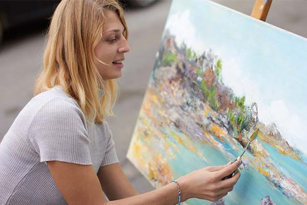

Живопись

Глава 1. Зарубежные художники
- Винсент Ван Гог
- Джон Сиргер Сарджент
- Оскар Клод Моне
- Сальвадор Дали
- Леонардо да Винчи
Глава 2. Русские художники
- Исаак Ильич Левитан
- Михаил Александрович Врубель
- Василий Григорьевич Перов
Глава 3. Несколько моих самых любимых картин мира
- Мои любимые картины(5 штук)